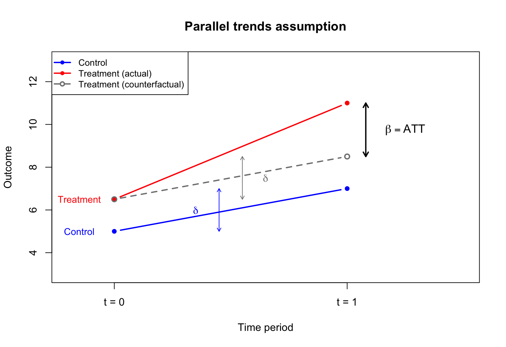

Selection bias arises when the treatment and control groups differ in their baseline outcomes Y_i(0). For example, people who choose to enroll in job training may differ systematically from those who do not.
Random assignment
Under random assignment, treatment D_i is independent of potential outcomes:
where \mathrm{E}\left[U_i(0) \mid X_i, D_i\right] = 0 and \mathrm{E}\left[U_i(1) \mid X_i, D_i\right] = 0.
These assumptions mean that, after conditioning on X_i, treatment assignment D_i is as good as random. This is called conditional mean independence (or “selection on observables”).
The coefficient \hat{\tau} on D_i directly estimates the ATE.
This works because demeaning the interaction “absorbs” the (\beta_1 - \beta_0)\mathrm{E}\left[X_i\right] part of the ATE into the coefficient on D_i.
Why not regress Y_i on D_i and X_i?
A simpler regression omits the interaction:
Y_i = a + \tau D_i + b X_i + V_i.
This is valid if \beta_1 = \beta_0 (the covariate has the same effect in both groups). Then \delta = 0, the interaction drops out, and the coefficient on D_i is the ATE.
If \beta_1 \neq \beta_0, the omitted interaction creates bias. The regression with the demeaned interaction nests the simpler model as a special case.
Example: separate regressions
Estimate separate regressions of re78 on educ for the treatment and control groups:
The coefficient on y81nrinc matches the DID computed from the 2×2 table.
The estimated effect is negative (incinerator reduced nearby prices), but the p-value is around 0.11, so it is not statistically significant at the 5% level.
DID with covariates
Adding house characteristics as controls can improve precision:
After controlling for house age, the DID estimate becomes larger in magnitude and statistically significant.
Controlling for covariates reduces residual variance, leading to more precise estimates.
DID and potential outcomes
To connect DID with the potential outcomes framework, define panel potential outcomes: Y_{it}(d) is the outcome for individual i at time t if assigned to group d \in \{0, 1\}.
Being assigned to the treatment group does not change pre-treatment outcomes in expectation.
In the incinerator example: before the incinerator was announced, living near the future site did not affect house prices (relative to what they would have been otherwise).
Under no anticipation, we can replace Y_{i0}(1) with Y_{i0}(0) in the expression for \beta:
The parallel trends assumption cannot be directly tested because Y_{i1}(0) is unobserved for the treated group. However, if pre-treatment data for multiple periods exist, one can check whether trends were parallel before treatment.
Parallel trends diagram
Illustrating the parallel trends assumption:

Summary
Potential outcomesY_i(1) and Y_i(0) formalize causal effects. The individual treatment effect Y_i(1) - Y_i(0) is never fully observed.
The ATE and ATT are population-level summaries of treatment effects.
With random assignment, a simple regression of Y_i on D_i estimates the ATE.
With observational data, controlling for covariates and using the demeaning trick (interacting D_i with X_i - \bar{X}) allows the coefficient on D_i to estimate the ATE.
Difference-in-differences uses panel data to compare changes over time between groups:
Under no anticipation and parallel trends, the DID estimand \beta equals the ATT.
Source Code
---title: "Lecture 14: Treatment effects and difference-in-differences"subtitle: "Economics 326 — Introduction to Econometrics II"author: - name: "Vadim Marmer, UBC"format: html: output-file: 326_14_treatment_did.html toc: true toc-depth: 3 toc-location: right toc-title: "Table of Contents" theme: cosmo smooth-scroll: true html-math-method: katex pdf: output-file: 326_14_treatment_did.pdf pdf-engine: xelatex geometry: margin=0.75in fontsize: 10pt number-sections: false toc: false classoption: fleqn revealjs: output-file: 326_14_treatment_did_slides.html theme: solarized css: slides_no_caps.css smaller: true slide-number: c/t incremental: true html-math-method: katex scrollable: true chalkboard: false self-contained: true transition: none---## Motivation: causal questions::: {.hidden}\gdef\E#1{\mathrm{E}\left[#1\right]}\gdef\Var#1{\mathrm{Var}\left(#1\right)}\gdef\Cov#1{\mathrm{Cov}\left(#1\right)}\gdef\Vhat#1{\widehat{\mathrm{Var}}\left(#1\right)}\gdef\se#1{\mathrm{se}\left(#1\right)}:::- Many important questions in economics are **causal**: - Does job training increase earnings? - Does a new drug improve health outcomes? - Does building an incinerator reduce nearby house prices?- The **fundamental challenge**: we can never observe the same individual both with and without treatment at the same time.## Potential outcomes- For each individual $i$, define two **potential outcomes**: - $Y_i(1)$: outcome if individual $i$ receives treatment ($D_i = 1$), - $Y_i(0)$: outcome if individual $i$ does not receive treatment ($D_i = 0$).- The **individual treatment effect** for person $i$ is: $$ Y_i(1) - Y_i(0). $$- Example: if $Y_i$ is earnings and $D_i$ indicates job training, then $Y_i(1) - Y_i(0)$ is the causal effect of training on earnings for person $i$.## The fundamental problem- Let $D_i \in \{0, 1\}$ denote treatment status. The **observed outcome** is: $$ Y_i = D_i \, Y_i(1) + (1 - D_i) \, Y_i(0). $$- If $D_i = 1$, we observe $Y_i(1)$ but not $Y_i(0)$.- If $D_i = 0$, we observe $Y_i(0)$ but not $Y_i(1)$.- We can never observe both potential outcomes for the same individual. This is the **fundamental problem of causal inference**.## Average treatment effects- Since individual treatment effects $Y_i(1) - Y_i(0)$ are unobservable, we focus on averages.- **Average Treatment Effect (ATE):** $$ \text{ATE} = \E{Y_i(1) - Y_i(0)}. $$- **Average Treatment Effect on the Treated (ATT):** $$ \text{ATT} = \E{Y_i(1) - Y_i(0) \mid D_i = 1}. $$- ATE averages over the entire population; ATT averages only over those who actually receive treatment.## Selection bias- A naive comparison of treated and untreated outcomes yields: \begin{align*} &\E{Y_i \mid D_i = 1} - \E{Y_i \mid D_i = 0} \\ &= \E{Y_i(1) \mid D_i = 1} - \E{Y_i(0) \mid D_i = 0}. \end{align*}- Add and subtract $\E{Y_i(0) \mid D_i = 1}$: \begin{align*} &= \underbrace{\E{Y_i(1) - Y_i(0) \mid D_i = 1}}_{\text{ATT}} \\ &\quad + \underbrace{\E{Y_i(0) \mid D_i = 1} - \E{Y_i(0) \mid D_i = 0}}_{\text{Selection bias}}. \end{align*}- **Selection bias** arises when the treatment and control groups differ in their baseline outcomes $Y_i(0)$. For example, people who choose to enroll in job training may differ systematically from those who do not.## Random assignment- Under **random assignment**, treatment $D_i$ is independent of potential outcomes: $$ \E{Y_i(0) \mid D_i = 1} = \E{Y_i(0) \mid D_i = 0} = \E{Y_i(0)}. $$- The selection bias vanishes, and the simple difference in means equals the ATE: $$ \E{Y_i \mid D_i = 1} - \E{Y_i \mid D_i = 0} = \text{ATE} = \text{ATT}. $$- Randomized experiments (like the National Supported Work program) achieve this by randomly assigning individuals to treatment and control groups.## Regression with a treatment dummy- With random assignment, the ATE can be estimated by regressing $Y_i$ on a treatment dummy: $$ Y_i = \alpha + \tau D_i + U_i, $$ where $\E{U_i \mid D_i} = 0$ under randomization.- The OLS estimate of $\tau$ equals the difference in sample means: $$ \hat{\tau} = \bar{Y}_1 - \bar{Y}_0, $$ where $\bar{Y}_1$ and $\bar{Y}_0$ are the sample averages for the treated and control groups.## Example: Lalonde data- The **National Supported Work (NSW)** program randomly assigned disadvantaged workers to receive job training.- We use the `jtrain2` dataset from the `wooldridge` package, based on the Lalonde (1986) study:```{r}#| echo: true#| message: falselibrary(wooldridge)data(jtrain2)head(jtrain2[, c("train", "re78", "educ", "age", "black", "married")], n =10)```- `train`: 1 if assigned to job training, 0 otherwise.- `re78`: real earnings in 1978 (in dollars).## Estimating the ATE- Since treatment was randomly assigned, the coefficient on `train` estimates the ATE:```{r}#| echo: truesummary(lm(re78 ~ train, data = jtrain2))$coefficients```- The estimated ATE is approximately \$1,794: on average, participation in the job training program increased 1978 earnings by about \$1,794.## Observational studies- In many settings, treatment is **not randomly assigned**. Individuals self-select into treatment.- Example: workers who voluntarily enroll in job training may be more motivated or have lower baseline earnings than those who do not enroll.- Self-selection generates **selection bias**, and the simple difference in means no longer estimates the ATE.- To estimate treatment effects from observational data, we need to **control for covariates** that affect both treatment selection and outcomes.## Potential outcomes with a covariate- Suppose the potential outcomes depend linearly on a covariate $X_i$: \begin{align*} Y_i(0) &= \alpha_0 + \beta_0 X_i + U_i(0), \\ Y_i(1) &= \alpha_1 + \beta_1 X_i + U_i(1), \end{align*} where $\E{U_i(0) \mid X_i, D_i} = 0$ and $\E{U_i(1) \mid X_i, D_i} = 0$.- These assumptions mean that, after conditioning on $X_i$, treatment assignment $D_i$ is as good as random. This is called **conditional mean independence** (or "selection on observables").## The ATE with a covariate- Taking expectations of the potential outcomes: \begin{align*} \E{Y_i(1)} &= \alpha_1 + \beta_1 \E{X_i}, \\ \E{Y_i(0)} &= \alpha_0 + \beta_0 \E{X_i}. \end{align*}- The ATE is: \begin{align*} \text{ATE} &= \E{Y_i(1) - Y_i(0)} \\ &= (\alpha_1 - \alpha_0) + (\beta_1 - \beta_0)\E{X_i}. \end{align*}- The ATE depends on the difference in intercepts **and** the difference in slopes, weighted by the population mean of $X_i$.## Two separate regressions- One approach: estimate separate regressions for each group.- **Control group** ($D_i = 0$): $Y_i = \alpha_0 + \beta_0 X_i + U_i(0).$- **Treatment group** ($D_i = 1$): $Y_i = \alpha_1 + \beta_1 X_i + U_i(1).$- The estimated ATE is: \begin{align*} \widehat{\text{ATE}} &= (\hat{\alpha}_1 - \hat{\alpha}_0) \\ &\quad + (\hat{\beta}_1 - \hat{\beta}_0)\bar{X}, \end{align*} where $\bar{X}$ is the overall sample mean of $X_i$.## Combined regression with interactions- The observed outcome $Y_i = D_i Y_i(1) + (1 - D_i) Y_i(0)$ can be written as a single regression. Expanding: \begin{align*} Y_i &= \alpha_0(1 - D_i) + \alpha_1 D_i \\ &\quad + \beta_0 X_i(1 - D_i) + \beta_1 X_i D_i + \tilde{U}_i \\ &= \alpha_0 + (\alpha_1 - \alpha_0)D_i \\ &\quad + \beta_0 X_i + (\beta_1 - \beta_0)X_i D_i + \tilde{U}_i, \end{align*} where $\tilde{U}_i = (1 - D_i)U_i(0) + D_i U_i(1)$.- This is a regression of $Y_i$ on $D_i$, $X_i$, and the interaction $X_i D_i$.- The coefficient on $D_i$ is $\alpha_1 - \alpha_0$, which is **not** the ATE (unless $\beta_1 = \beta_0$).## The demeaning trick- Write $X_i = \E{X_i} + (X_i - \E{X_i})$. Then the interaction term becomes: \begin{align*} (\beta_1 - \beta_0)X_i D_i &= (\beta_1 - \beta_0)\E{X_i} D_i \\ &\quad + (\beta_1 - \beta_0)(X_i - \E{X_i})D_i. \end{align*}- Substituting into the regression: \begin{align*} Y_i &= \alpha_0 + \Big[(\alpha_1 - \alpha_0) + (\beta_1 - \beta_0)\E{X_i}\Big] D_i \\ &\quad + \beta_0 X_i + (\beta_1 - \beta_0)(X_i - \E{X_i})D_i + \tilde{U}_i. \end{align*}- Define $\tau = (\alpha_1 - \alpha_0) + (\beta_1 - \beta_0)\E{X_i}$ and $\delta = \beta_1 - \beta_0$: \begin{align*} Y_i &= \alpha_0 + \tau D_i + \beta_0 X_i \\ &\quad + \delta(X_i - \E{X_i})D_i + \tilde{U}_i. \end{align*}- The coefficient $\tau$ on $D_i$ is exactly the **ATE**.## Estimating the ATE with covariates- In practice, replace $\E{X_i}$ with the sample mean $\bar{X}$ and run the regression: \begin{align*} Y_i &= \hat{\alpha}_0 + \hat{\tau} D_i + \hat{\beta}_0 X_i \\ &\quad + \hat{\delta}(X_i - \bar{X})D_i + \text{residual}. \end{align*}- The coefficient $\hat{\tau}$ on $D_i$ directly estimates the ATE.- This works because demeaning the interaction "absorbs" the $(\beta_1 - \beta_0)\E{X_i}$ part of the ATE into the coefficient on $D_i$.## Why not regress $Y_i$ on $D_i$ and $X_i$?- A simpler regression omits the interaction: $$ Y_i = a + \tau D_i + b X_i + V_i. $$- This is valid if $\beta_1 = \beta_0$ (the covariate has the same effect in both groups). Then $\delta = 0$, the interaction drops out, and the coefficient on $D_i$ is the ATE.- If $\beta_1 \neq \beta_0$, the omitted interaction creates bias. The regression with the demeaned interaction nests the simpler model as a special case.## Example: separate regressions- Estimate separate regressions of `re78` on `educ` for the treatment and control groups:```{r}#| echo: true reg0 <-lm(re78 ~ educ, data = jtrain2, subset = (train ==0)) reg1 <-lm(re78 ~ educ, data = jtrain2, subset = (train ==1))cbind(Control =coef(reg0), Treatment =coef(reg1))```- Compute the estimated ATE:```{r}#| echo: true xbar <-mean(jtrain2$educ) a0 <-coef(reg0)[1]; b0 <-coef(reg0)[2] a1 <-coef(reg1)[1]; b1 <-coef(reg1)[2] ATE_manual <- (a1 - a0) + (b1 - b0) * xbarcat("Sample mean of educ:", round(xbar, 2), "\n")cat("Estimated ATE:", round(ATE_manual, 2), "\n")```## Example: demeaned regression- Create the demeaned interaction and run the combined regression:```{r}#| echo: true jtrain2$educ_dm <- jtrain2$educ -mean(jtrain2$educ) reg_dm <-lm(re78 ~ train + educ +I(train * educ_dm), data = jtrain2)summary(reg_dm)$coefficients```- The coefficient on `train` directly estimates the ATE, matching the result from the separate regressions approach.## Example: regression lines- The two regression lines, with a vertical line at $\bar{X}$ and the ATE marked as the gap:```{r}#| echo: false#| fig-align: center#| fig-width: 8#| fig-height: 5.5 educ_range <-seq(5, 18, length.out =100) yhat0 <-coef(reg0)[1] +coef(reg0)[2] * educ_range yhat1 <-coef(reg1)[1] +coef(reg1)[2] * educ_rangeplot(educ_range, yhat0, type ="l", lwd =2, col ="blue",xlab ="Education (years)", ylab ="Earnings in 1978 ($)",ylim =range(c(yhat0, yhat1)),main ="Separate regression lines by treatment group")lines(educ_range, yhat1, lwd =2, col ="red", lty =2)# Vertical line at xbar xbar <-mean(jtrain2$educ)abline(v = xbar, lty =3, col ="gray50")# ATE arrow at xbar y0_at_xbar <-coef(reg0)[1] +coef(reg0)[2] * xbar y1_at_xbar <-coef(reg1)[1] +coef(reg1)[2] * xbararrows(xbar +0.3, y0_at_xbar, xbar +0.3, y1_at_xbar,code =3, length =0.1, lwd =1.5, col ="black")text(xbar +0.7, (y0_at_xbar + y1_at_xbar) /2, "ATE", cex =1.1)text(xbar, min(yhat0, yhat1) -300, expression(bar(X)), cex =1.1)legend("topleft", legend =c("Control (train = 0)", "Treatment (train = 1)"),col =c("blue", "red"), lty =c(1, 2), lwd =2)```## From cross-sections to panel data- So far, we used **cross-sectional** data and assumed selection on observables: after controlling for $X_i$, treatment is as good as random.- In some settings, this assumption is hard to justify. An alternative approach exploits **panel data** (repeated observations on the same units over time).- The **difference-in-differences (DID)** method compares changes over time between a treatment group and a control group.## DID setup- Two time periods: $t \in \{0, 1\}$ (before and after treatment).- Two groups: $D_i \in \{0, 1\}$ (control and treatment).- Treatment occurs between periods 0 and 1, and only the treatment group ($D_i = 1$) is affected.- We observe $Y_{it}$: the outcome for individual $i$ at time $t$.## DID regression model- The DID regression is: $$ Y_{it} = \alpha + \delta \cdot t + \gamma D_i + \beta(t \cdot D_i) + U_{it}, $$ where $\E{U_{it} \mid D_i} = 0$.- The 2×2 table of conditional means: | | $D_i = 0$ (Control) | $D_i = 1$ (Treatment) | |---|---|---| | $t = 0$ | $\alpha$ | $\alpha + \gamma$ | | $t = 1$ | $\alpha + \delta$ | $\alpha + \delta + \gamma + \beta$ |## Interpreting the coefficients- $\alpha$: baseline expected outcome (control group, before treatment).- $\delta$: **time effect** — the change in the control group's outcome from $t = 0$ to $t = 1$. This captures common trends (e.g., inflation, economic growth).- $\gamma$: **group difference** at baseline — the pre-existing difference between treatment and control groups at $t = 0$.- $\beta$: **DID estimand** — the additional change in the treatment group's outcome, beyond what the control group experienced.## Deriving the DID estimand- For each combination of $t$ and $D_i$, take expectations using $\E{U_{it} \mid D_i} = 0$: \begin{align*} t = 0,\ D_i = 0: \quad & \E{Y_{i0} \mid D_i = 0} = \alpha, \\ t = 1,\ D_i = 0: \quad & \E{Y_{i1} \mid D_i = 0} = \alpha + \delta, \\ t = 0,\ D_i = 1: \quad & \E{Y_{i0} \mid D_i = 1} = \alpha + \gamma, \\ t = 1,\ D_i = 1: \quad & \E{Y_{i1} \mid D_i = 1} = \alpha + \delta + \gamma + \beta. \end{align*}- Subtracting the control group change from the treatment group change: \begin{align*} \beta &= \Big(\E{Y_{i1} \mid D_i = 1} - \E{Y_{i0} \mid D_i = 1}\Big) \\ &\quad - \Big(\E{Y_{i1} \mid D_i = 0} - \E{Y_{i0} \mid D_i = 0}\Big). \end{align*}- The DID estimand is the **difference in within-group changes** over time: \begin{align*} \beta &= \E{Y_{i1} - Y_{i0} \mid D_i = 1} \\ &\quad - \E{Y_{i1} - Y_{i0} \mid D_i = 0}. \end{align*}## DID diagram- The classic DID diagram shows the control group, treatment group, and counterfactual:```{r}#| echo: false#| fig-align: center#| fig-width: 8#| fig-height: 5.5 alpha <-5; delta <-2; gamma <-1; beta_did <-3 y_ctrl <-c(alpha, alpha + delta) y_treat <-c(alpha + gamma, alpha + delta + gamma + beta_did) y_cf <-c(alpha + gamma, alpha + delta + gamma)plot(c(0, 1), y_ctrl, type ="b", pch =16, lwd =2, col ="blue",xlab ="Time period", ylab ="Outcome",xlim =c(-0.1, 1.3), ylim =c(3, 13),xaxt ="n", main ="Difference-in-differences")axis(1, at =c(0, 1), labels =c("t = 0\n(Before)", "t = 1\n(After)"))lines(c(0, 1), y_treat, type ="b", pch =16, lwd =2, col ="red")lines(c(0, 1), y_cf, type ="b", pch =1, lwd =2, col ="gray50", lty =2)arrows(1.05, y_cf[2], 1.05, y_treat[2],code =3, length =0.08, lwd =1.5)text(1.15, (y_cf[2] + y_treat[2]) /2, expression(beta), cex =1.3)text(1.05, y_ctrl[2], "Control", pos =4, col ="blue", cex =0.9)text(1.05, y_treat[2] +0.3, "Treatment", pos =4, col ="red", cex =0.9)text(1.05, y_cf[2] -0.3, "Counterfactual", pos =4, col ="gray50", cex =0.9)arrows(-0.05, y_ctrl[1], -0.05, y_ctrl[2],code =3, length =0.08, lwd =1, col ="blue")text(-0.1, (y_ctrl[1] + y_ctrl[2]) /2, expression(delta), cex =1,col ="blue", pos =2)```## Example: incinerator and house prices- Kiel and McClain (1995) studied how the construction of a garbage incinerator affected nearby house prices in North Andover, Massachusetts.- We use the `kielmc` dataset from the `wooldridge` package:```{r}#| echo: truedata(kielmc)head(kielmc[, c("rprice", "y81", "nearinc", "y81nrinc", "age")], n =10)```- `rprice`: house price in 1978 dollars.- `y81`: 1 if year is 1981 (after incinerator announced), 0 if 1978.- `nearinc`: 1 if house is near the incinerator site.- `y81nrinc`: interaction `y81 * nearinc`.## The 2×2 table of means- Compute the four group means:```{r}#| echo: true means <-tapply(kielmc$rprice, list(kielmc$y81, kielmc$nearinc), mean)colnames(means) <-c("Far (nearinc=0)", "Near (nearinc=1)")rownames(means) <-c("1978 (y81=0)", "1981 (y81=1)")round(means)```- Computing the DID by hand:```{r}#| echo: true diff_near <- means[2, 2] - means[1, 2] diff_far <- means[2, 1] - means[1, 1] DID <- diff_near - diff_farcat("Change (near):", round(diff_near), "\n")cat("Change (far): ", round(diff_far), "\n")cat("DID: ", round(DID), "\n")```## DID regression- The DID regression:```{r}#| echo: true reg_did <-lm(rprice ~ y81 + nearinc + y81nrinc, data = kielmc)summary(reg_did)$coefficients```- The coefficient on `y81nrinc` matches the DID computed from the 2×2 table.- The estimated effect is negative (incinerator reduced nearby prices), but the p-value is around 0.11, so it is not statistically significant at the 5% level.## DID with covariates- Adding house characteristics as controls can improve precision:```{r}#| echo: true reg_did_cov <-lm(rprice ~ y81 + nearinc + y81nrinc + age +I(age^2),data = kielmc)summary(reg_did_cov)$coefficients```- After controlling for house age, the DID estimate becomes larger in magnitude and statistically significant.- Controlling for covariates reduces residual variance, leading to more precise estimates.## DID and potential outcomes- To connect DID with the potential outcomes framework, define **panel potential outcomes**: $Y_{it}(d)$ is the outcome for individual $i$ at time $t$ if assigned to group $d \in \{0, 1\}$.- The observed outcome is: $$ Y_{it} = D_i \, Y_{it}(1) + (1 - D_i) \, Y_{it}(0). $$- What we observe for each group: | | Control ($D_i = 0$) | Treatment ($D_i = 1$) | |---|---|---| | $t = 0$ | $Y_{i0}(0)$ | $Y_{i0}(1)$ | | $t = 1$ | $Y_{i1}(0)$ | $Y_{i1}(1)$ |- The treatment effect at time $t = 1$ for the treated group is: $$ \text{ATT} = \E{Y_{i1}(1) - Y_{i1}(0) \mid D_i = 1}. $$ The counterfactual $Y_{i1}(0)$ is unobserved for the treated group.## DID as a treatment effect- Recall that $\beta = \E{Y_{i1} - Y_{i0} \mid D_i = 1} - \E{Y_{i1} - Y_{i0} \mid D_i = 0}$.- Substituting observed outcomes with potential outcomes: \begin{align*} \beta &= \E{Y_{i1}(1) - Y_{i0}(1) \mid D_i = 1} \\ &\quad - \E{Y_{i1}(0) - Y_{i0}(0) \mid D_i = 0}. \end{align*}- To relate $\beta$ to the ATT, add and subtract $\E{Y_{i1}(0) - Y_{i0}(0) \mid D_i = 1}$: \begin{align*} \beta &= \underbrace{\E{Y_{i1}(1) - Y_{i1}(0) \mid D_i = 1}}_{\text{ATT}} \\ &\quad + \E{Y_{i1}(0) - Y_{i0}(1) \mid D_i = 1} \\ &\quad - \E{Y_{i1}(0) - Y_{i0}(0) \mid D_i = 0}. \end{align*}- For $\beta$ to equal the ATT, we need two additional assumptions.## Assumption 1: no anticipation- **No anticipation:** the outcome at $t = 0$ (before treatment) is not affected by future treatment group assignment: $$ \E{Y_{i0}(1) \mid D_i = 1} = \E{Y_{i0}(0) \mid D_i = 1}. $$- Being assigned to the treatment group does not change pre-treatment outcomes in expectation.- In the incinerator example: before the incinerator was announced, living near the future site did not affect house prices (relative to what they would have been otherwise).- Under no anticipation, we can replace $Y_{i0}(1)$ with $Y_{i0}(0)$ in the expression for $\beta$: \begin{align*} \beta &= \text{ATT} + \E{Y_{i1}(0) - Y_{i0}(0) \mid D_i = 1} \\ &\quad - \E{Y_{i1}(0) - Y_{i0}(0) \mid D_i = 0}. \end{align*}## Assumption 2: parallel trends- **Parallel trends:** in the absence of treatment, both groups would have experienced the same change over time: $$ \E{Y_{i1}(0) - Y_{i0}(0) \mid D_i = 0} = \E{Y_{i1}(0) - Y_{i0}(0) \mid D_i = 1}. $$- Under both no anticipation and parallel trends: $$ \beta = \text{ATT}. $$- The parallel trends assumption cannot be directly tested because $Y_{i1}(0)$ is unobserved for the treated group. However, if pre-treatment data for multiple periods exist, one can check whether trends were parallel before treatment.## Parallel trends diagram- Illustrating the parallel trends assumption:```{r}#| echo: false#| fig-align: center#| fig-width: 8#| fig-height: 5.5 alpha <-5; delta <-2; gamma <-1.5; beta_did <-2.5 y_ctrl <-c(alpha, alpha + delta) y_treat <-c(alpha + gamma, alpha + delta + gamma + beta_did) y_cf <-c(alpha + gamma, alpha + delta + gamma)plot(c(0, 1), y_ctrl, type ="b", pch =16, lwd =2, col ="blue",xlab ="Time period", ylab ="Outcome",xlim =c(-0.2, 1.5), ylim =c(3, 13),xaxt ="n", main ="Parallel trends assumption")axis(1, at =c(0, 1), labels =c("t = 0", "t = 1"))lines(c(0, 1), y_treat, type ="b", pch =16, lwd =2, col ="red")lines(c(0, 1), y_cf, type ="b", pch =1, lwd =2, col ="gray50", lty =2)arrows(0.45, y_ctrl[1], 0.45, y_ctrl[2],code =3, length =0.06, lwd =1, col ="blue")text(0.35, (y_ctrl[1] + y_ctrl[2]) /2, expression(delta), cex =1, col ="blue")arrows(0.55, y_cf[1], 0.55, y_cf[2],code =3, length =0.06, lwd =1, col ="gray50")text(0.65, (y_cf[1] + y_cf[2]) /2, expression(delta), cex =1, col ="gray50")arrows(1.08, y_cf[2], 1.08, y_treat[2],code =3, length =0.08, lwd =2)text(1.25, (y_cf[2] + y_treat[2]) /2,expression(beta == ATT), cex =1.1)text(-0.15, y_ctrl[1], "Control", col ="blue", cex =0.9)text(-0.15, y_treat[1], "Treatment", col ="red", cex =0.9)legend("topleft", legend =c("Control", "Treatment (actual)","Treatment (counterfactual)"),col =c("blue", "red", "gray50"), lty =c(1, 1, 2),pch =c(16, 16, 1), lwd =2, cex =0.85)```## Summary- **Potential outcomes** $Y_i(1)$ and $Y_i(0)$ formalize causal effects. The individual treatment effect $Y_i(1) - Y_i(0)$ is never fully observed.- The **ATE** and **ATT** are population-level summaries of treatment effects.- With **random assignment**, a simple regression of $Y_i$ on $D_i$ estimates the ATE.- With **observational data**, controlling for covariates and using the **demeaning trick** (interacting $D_i$ with $X_i - \bar{X}$) allows the coefficient on $D_i$ to estimate the ATE.- **Difference-in-differences** uses panel data to compare changes over time between groups: \begin{align*} \beta &= \E{Y_{i1} - Y_{i0} \mid D_i = 1} \\ &\quad - \E{Y_{i1} - Y_{i0} \mid D_i = 0}. \end{align*}- Under **no anticipation** and **parallel trends**, the DID estimand $\beta$ equals the ATT.